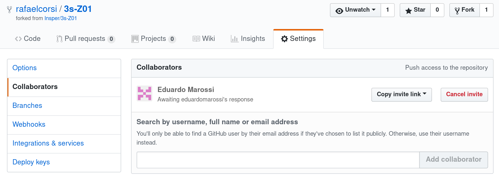

Lab 2: Configurando Github
Devemos começar a preparar o terreno para os projetos em grupo que estarão por vir, nessa etapa vocês devem montar um grupo de 4 colegas e dar um nome a ele (os grupos são nomeados por letras, a primeira letra do nome do seu grupo será fornecida pelo professor).
O grupo irá trabalhar de forma colaborativa via a utilização do git/ github. É imprescindível que todos trabalhem dessa forma, pois será a maneira que iremos avaliar individualmente vocês.
GitHub
O git será uma das ferramentas mais importantes para o projeto, com as etapas a seguir vocês realizaram um Fork do repositório do projeto e adicionaram os colaboradores.
Fork
Uma pessoa por grupo
Daqui até o final só uma pessoa do grupo deve fazer! Os demais devem acompanhar.
O Scrum Master do grupo (escolham entre vocês) deverá realizar o fork do repositório do projeto do computador Z01, para isso, basta acessar a página do github do projeto:
E no site clicar em fork:

Note que criar um fork é diferente de criar apenas uma cópia. No fork o seu repositório ainda possui como referência o original (/insper/bits-e-proc) o que possibilitará que vocês atualizem o repositório com novos materiais que serão necessários ao longo do semestre sem perder o que já foi feito e mais importante sem muito trabalho.
git 1
fork não existe no git, é algo implementado pelo github (e similares). É utilizado para criar uma 'cópia' de um repositório para podermos trabalhar nele sem a necessidade de mexermos no original.
Exercise 1
Alterando o nome do Fork 2
Colaboradores
Isso irá criar uma cópia do repositório na sua conta, uma vez realizado a cópia será necessário inserir os demais colegas como integrantes desse repositório (para que eles possam propor alterações). Para isso vá até a página do repositório na sua conta e clique em Settings 
Collaborators e adicione os usuários ou e-mails dos seus colegas.
 Todos integrantes do grupo já devem ter uma conta no github já criada.
Todos integrantes do grupo já devem ter uma conta no github já criada.

Exercise 3
Ferramentas github
git 2
GitHub Inc. is a web-based hosting service for version control using Git. It is mostly used for computer code. It offers all of the distributed version control and source code management functionality of Git as well as adding its own features. Wikipedia
Nessa disciplina iremos utilizar não só a ferramenta principal do github, que é o servidor de repositórios git, mas todas as outras ferramentas já integradas na plataforma para gestão e acompanhamento de projeto. Para isso será alteramos algumas configurações no repositório:
Ferramentas github 3
Outras ferramentas do github/ git que iremos usar:
-
Github Project: Ferramenta do github para gerenciamento de projetos (estilo Kambam), cada repositório pode ter N projetos, e o github automatiza o processo de todo/doing/done deixando de maneira visual as tarefas.
-
github issues: Plataforma do github para criação de tarefas/ reportar erros. As tarefas aqui criadas serão associadas a um projeto específico e a um grupo de pessoas específicas.
-
Branch: Ramo criado para implementar um feature/ correção de bug que será futuramente incorporado no master (merge)
-
Main: Ramo principal do projeto, gerenciado pelo Scrum Master
-
Pull-request: Maneira de um lider de projeto receber alterações a um projeto e ter controle do que será aceito ou não. Na maioria dos casos o pull-request é criado por um usuário e revisado por outro. Quem for fazer a eletiva de
Desenvolvimento Abertodo Prof. Igor verá bem a fundo essa questão.
Exercise 4
Actions
Irá executar de forma automática alguns testes (criado por nós) no projeto e em caso de alguma falha irá notificar no github.
Como ele funciona? Ele fica verificando o repositório por alterações (você deve além de dar commit, dar push) e para cada novo commit ele faz o seguinte
- Inicializa uma nova máquina virtual na nuvem (ubuntu, windows, mac)
- Instala todo a infra necessária do projeto (no nosso caso: python, ...)
- Executa os scripts de teste localizados em cada projeto.
- Desliga e "deleta" a máquina virtual recém criada.
O arquivo de configuração está localizado na pasta do repositório .github/workflows/ é nele que estão feitas todas as definições de execução.
Na pagina web do seu repositório no github em commits deve aparecer uma pequena bolinha em cada um dos commits novos que serão feitos no projeto, esse indicador será atualizado pelo travis sendo:
- Amarelo: O teste está em execução
- Verde: O teste passou
- Vermelho: O teste falhou
Note
Cada teste leva em torno de alguns minutos já que toda a infraestrutura é instalada sempre do zero, não utilize o sistema de Integração Contínua para validar as suas novas implementações, esse sistema deve ser utilizado para encontrar problemas mais amplos ou para o scrum master aceitar ou não um pull-request, já que o resultado do sucesso ou não dessa requisição é visível facilmente.
Arquivo GRUPO.ym de configuração
Um por grupo
Somente um do grupo deve realizar isso.
Após clonar o repositório o mediador desse projeto deve editar o arquivo json GRUPO.json que está localizado na raiz do projeto inserindo a letra do grupo (que foi atribuída em sala) e o nome recém criado do grupo (o nome do grupo deve ser uma Frase com a primeira palavra começando com a letra do Grupo).
Exemplo um grupo com a letra M, GRUPO.json:
Nome-Grupo: "Macarrao"
Após editar o arquivo deve-se: fazer um commit e um push para o repositório.
$ git commit -am "update Grupo"
$ git push origin main
Exercise 5